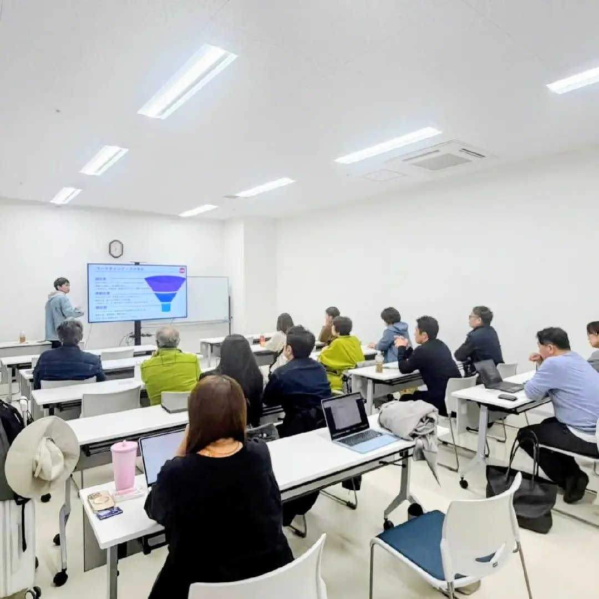
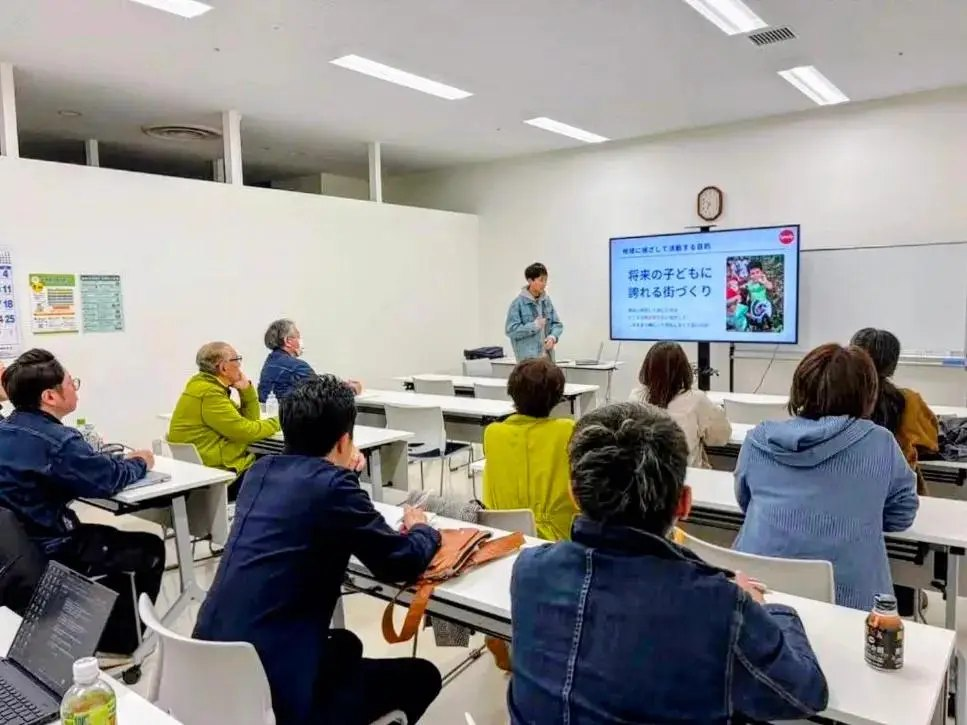
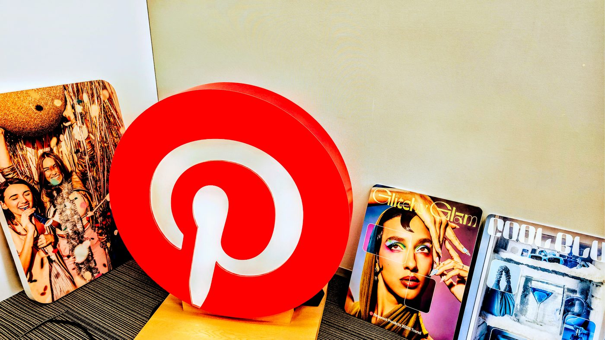

小樽発地域事業者のための、デジタル集客勉強会。
Instagram、LINE、Googleビジネスプロフィール、広告、AI活用などをテーマに、地域のお店や中小企業が無理なくデジタルを活用するための勉強会を不定期で開催しています。
人口が減っていく地域でも、必要な人に見つけてもらい、問い合わせ・予約・来店につながる流れを一緒に学びます。
今後の勉強会情報を、LINEでお届けします。登録は無料です。
AKINDO Lab by Spadyは、小樽・銭函を拠点に活動するSpadyが主催する、地域事業者向けのデジタル集客勉強会です。
Instagram、LINE、Googleビジネスプロフィール、Meta広告、AI活用などをテーマに、地域のお店や中小企業が、無理なくデジタルを活用するための考え方をお伝えしています。
単なる操作方法ではなく、問い合わせ・予約・来店につながる流れをどう作るかを重視しています。
※AKINDO Lab by Spadyは、Spadyが独自に主催する勉強会です。小樽市が開催する「小樽商人塾」とは別の取り組みです。
※開催回によって、取り扱うテーマや内容は変更となる場合があります。
Instagram、LINE、Googleビジネスプロフィール、広告、AI活用、ホームページや予約導線の見直しなど、地域事業者に役立つテーマを不定期で取り上げていきます。
・興味のある回だけのご参加も可能です。
・内容や開催日程は変更となる場合があります。
・上記のほか、AI活用やGoogleビジネスプロフィールなど、地域事業者に役立つ幅広いテーマも不定期で取り扱います。
当てはまる項目を、タップしてチェックしてみてください。
今後の勉強会情報や、Instagram・LINE・Google・広告・AI活用に関するお知らせをLINEでお届けします。
少人数で質問しやすい形式で、テーマごとに席数を限定して開催しています。スライドを一方的に流すのではなく、参加された方の状況に近い例を交えながら進めています。


AKINDO Lab by Spadyでは、流行りのツールを紹介するだけではなく、地域のお店や中小企業が実際に使える形に落とし込むことを大切にしています。
広告を出す前に、Instagramプロフィール、LINE、Google検索、ホームページ、予約導線がつながっているかを確認する。
AIを使う場合も、単なる時短ではなく、日々の発信や顧客対応を続けやすくする。
地域の商いを、無理なく続けていくためのデジタル活用を、一緒に考える場です。
北海道・小樽/銭函を拠点に、Meta広告、Instagram、LINE公式アカウントを活用した集客導線づくりを支援。
前職ではMeta社に出向し、マーケティングプロとして広告主様・広告代理店様の広告運用をサポート。
現在は地域のお店や中小企業向けに、広告・SNS・LINE・Google・AIを無理なく活用するための勉強会も開催しています。
勉強会の開催報告や、日々の活動・考え方はThreadsでも発信しています。よろしければフォローください。
地域のお店や中小企業には、まだ十分に伝わっていない魅力がたくさんあります。
良い商品やサービスがあっても、Instagram、LINE、Google検索、広告、ホームページの流れがつながっていないことで、問い合わせや予約、来店につながらないケースも少なくありません。
前職ではMeta社に出向し、広告主様や広告代理店様のマーケティング支援に携わってきました。
その中で感じたのは、広告やSNS、デジタル活用に関する情報には大きな格差があるということです。
都市部の企業や広告代理店には新しい情報やノウハウが届きやすい一方で、地域のお店や中小企業には、本来使えるはずの選択肢が十分に届いていないこともあります。
人口が減っていく地域では、今までと同じやり方だけで新しいお客様に出会うことが難しくなっていきます。
だからこそ、Instagram、LINE、Google、広告、AI、ホームページをバラバラにせず、必要な人に見つけてもらい、問い合わせ・予約・来店につながる流れを整えることが大切だと考えています。
AKINDO Lab by Spadyでは、流行りのツールを紹介するだけではなく、地域のお店や中小企業が実際に使える形に落とし込むことを大切にしています。
小樽発の学びの場として、地域の商いを支えるような活動にしていきたいと考えています。

広告・SNS・テクノロジーの現場に触れてきた記録
今後の勉強会情報や、Instagram・LINE・Google・広告・AI活用に関するお知らせをLINEでお届けします。
次回開催のお知らせをLINEで受け取るAKINDO Lab by Spadyでは、Instagram、LINE、Google、広告、AI活用など、地域事業者向けの勉強会を不定期で開催しています。開催回によってテーマや内容は変わります。次回開催が決まり次第、LINEでご案内します。
登録は無料です。不要になったら、いつでもブロックしていただいて大丈夫です。